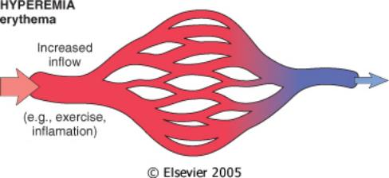
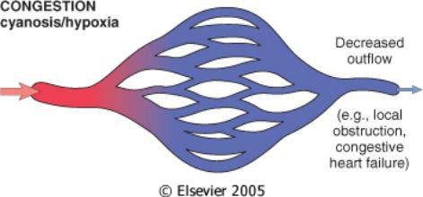

Hyperemia, Congestion and Edemaپرخونی، احتقان و ادم
Too much blood inside the vessels, and too much water outside them. These two problems are physically different but mechanically linked: the same raised venous pressure that engorges a capillary bed also pushes fluid out of it. Understanding that link is the single most useful thing in this Part.خون بیش از حد در داخل رگها، و آب بیش از حد در بیرون آنها. این دو مشکل از نظر فیزیکی متفاوتاند اما از نظر مکانیسم به هم گره خوردهاند: همان فشار وریدی بالارفتهای که بستر مویرگی را پر از خون میکند، مایع را هم از آن بیرون میراند. درک این پیوند، مفیدترین نکتهٔ این بخش است.
By the end of this Part you should be able toدر پایان این بخش باید بتوانید
Distinguish active hyperemia from passive congestion by mechanism, colour, temperature and clinical setting.پرخونی فعال را از احتقان غیرفعال، بر اساس مکانیسم، رنگ، دما و زمینهٔ بالینی تفکیک کنید.
List and explain at least three morphological features each of chronic pulmonary congestion and nutmeg liver.دستکم سه ویژگی مورفولوژیک احتقان مزمن ریه و کبد جوز هندی را نام ببرید و توضیح دهید.
Explain, from first principles, why hemosiderin-laden macrophages appear in the alveoli of a patient in left heart failure.از پایه توضیح دهید چرا در بیمار مبتلا به نارسایی قلب چپ، ماکروفاژهای حاوی هموسیدرین در آلوئولها ظاهر میشوند.
Derive all four mechanisms of non-inflammatory edema from the Starling equation.هر چهار مکانیسم ادم غیرالتهابی را از معادلهٔ استارلینگ استنتاج کنید.
Separate a transudate from an exudate on protein content, specific gravity and cellularity, and say what each implies.ترانسودا را از اگزودا بر اساس محتوای پروتئین، وزن مخصوص و سلولاریتی جدا کنید و بگویید هر کدام چه معنایی دارد.
1.1The Normal Microcirculationمیکروسیرکولاسیون طبیعی
Fig 1.1 Normal capillary bed. Arteriolar inflow (red) and venular outflow (blue) are balanced; the bed contains a modest, steady volume of blood.بستر مویرگی طبیعی. ورودی شریانچهای (قرمز) و خروجی وریدچهای (آبی) با هم متعادلاند و بستر حجم ثابت و متوسطی از خون دارد.
Before you can call something abnormal you need the baseline. A capillary bed sits between an arteriole (inflow, high pressure, controlled by smooth-muscle tone) and a venule (outflow, low pressure, essentially passive). The volume of blood standing in the bed at any moment is simply the balance of those two: volume = what comes in − what goes out.پیش از آنکه چیزی را غیرطبیعی بنامید، باید خط پایه را بدانید. هر بستر مویرگی بین یک شریانچه (ورودی، فشار بالا، تحت کنترل تونوس عضلهٔ صاف) و یک وریدچه (خروجی، فشار پایین، عملاً غیرفعال) قرار دارد. حجم خونی که در هر لحظه در بستر وجود دارد صرفاً حاصل تعادل همین دو است: حجم = آنچه وارد میشود منهای آنچه خارج میشود.
There are therefore only two ways to increase the local blood volume, and they are mirror images of one another:بنابراین تنها دو راه برای افزایش حجم خون موضعی وجود دارد و این دو، قرینهٔ یکدیگرند:
Open the tap wider — arteriolar dilation increases inflow. This is hyperemia (active).باز کردن بیشتر شیر ورودی — گشاد شدن شریانچه ورودی را زیاد میکند. این «پرخونی فعال» است.
Block the drain — impaired venous outflow traps blood in the bed. This is congestion (passive).بستن مسیر تخلیه — اختلال در خروج وریدی خون را در بستر حبس میکند. این «احتقان» (غیرفعال) است.
Both are grouped under the umbrella term hyperemia in the classical literature — "a local increase in the volume of blood caused by dilatation of the small vessels" — but in modern usage hyperemia alone means the active arterial form, and the passive form is called congestion. Your examiner will expect the modern usage.در متون کلاسیک هر دو زیر عنوان کلی هایپرمی قرار میگیرند — «افزایش موضعی حجم خون ناشی از گشاد شدن عروق کوچک» — اما در کاربرد امروزی، واژهٔ هایپرمی بهتنهایی به شکل فعالِ شریانی اشاره دارد و شکل غیرفعال را احتقان مینامند. ممتحن شما کاربرد امروزی را انتظار دارد.
High-Yieldنکتهٔ کلیدی
Hyperemia and congestion both increase intravascular volume. Edema increases extravascular (interstitial) volume. Congestion very often causes edema, because the raised venous pressure that produces the congestion is also the force that drives fluid across the capillary wall — but they are not the same thing and are not interchangeable terms.پرخونی و احتقان هر دو حجم داخل عروقی را افزایش میدهند؛ ادم حجم خارج عروقی (بینابینی) را. احتقان بسیار اغلب باعث ادم میشود، چون همان فشار وریدی بالا که احتقان را ایجاد میکند، نیرویی هم هست که مایع را از دیوارهٔ مویرگ بیرون میراند — اما این دو یکی نیستند و نباید بهجای هم بهکار روند.
1.2Hyperemia — the Active, Arterial Processپرخونی فعال — فرایند شریانی

Fig 1.2Hyperemia. Increased arteriolar inflow engorges the bed with oxygenated blood — hence erythema (redness) and local warmth.پرخونی فعال. افزایش ورودی شریانچهای بستر را از خون اکسیژندار پر میکند؛ نتیجه، قرمزی (اریتم) و گرمی موضعی است.
Definitionتعریف
Hyperemia (active hyperemia) is an active increase in local blood volume produced by arteriolar dilation, which augments arterial inflow into a tissue.پرخونی فعال (هایپرمی) افزایش فعال حجم خون موضعی است که در اثر گشاد شدن شریانچهها و در نتیجه افزایش ورود خون شریانی به بافت ایجاد میشود.
The word active is doing real work here. The vessel is not passively filling; a signal has actively relaxed arteriolar smooth muscle. The commonest signals are neurogenic (sympathetic withdrawal, as in blushing), metabolic (adenosine, CO2, H+, K+ accumulating in exercising muscle), and inflammatory (histamine, bradykinin, prostaglandins, nitric oxide at a site of injury).واژهٔ فعال اینجا معنای دقیقی دارد: رگ بهصورت منفعل پر نمیشود، بلکه یک پیام، عضلهٔ صاف شریانچه را فعالانه شل کرده است. شایعترین پیامها عصبی (کاهش تحریک سمپاتیک، مثل سرخشدن صورت)، متابولیک (تجمع آدنوزین، CO2، H+ و K+ در عضلهٔ در حال ورزش) و التهابی (هیستامین، برادیکینین، پروستاگلاندینها و نیتریک اکساید در محل آسیب) هستند.
Mechanism — why hyperemic tissue is red and warmمکانیسم — چرا بافت پرخون قرمز و گرم است
A vasodilator signal (metabolic, neurogenic or inflammatory) relaxes arteriolar smooth muscle.Arteriolar tone is the main resistance point of the circulation; relaxing it drops downstream resistance more than any other single change.یک پیام گشادکنندهٔ عروق (متابولیک، عصبی یا التهابی) عضلهٔ صاف شریانچه را شل میکند.تونوس شریانچه اصلیترین نقطهٔ مقاومت گردش خون است؛ شلکردن آن بیش از هر تغییر دیگری مقاومت پاییندست را کاهش میدهد.
Resistance falls, so flow through the capillary bed rises sharply.Flow ∝ pressure gradient ÷ resistance; with the gradient unchanged, halving resistance doubles flow.مقاومت افت میکند، پس جریان عبوری از بستر مویرگی بهشدت بالا میرود.جریان متناسب است با گرادیان فشار تقسیم بر مقاومت؛ با ثابتماندن گرادیان، نصفشدن مقاومت جریان را دو برابر میکند.
The bed fills with blood arriving directly from the arterial side, which is fully oxygenated and therefore bright red.Oxyhemoglobin is scarlet; deoxyhemoglobin is dark purple-blue. Colour follows the saturation of the haemoglobin actually present.بستر با خونی پر میشود که مستقیماً از سمت شریانی میآید، کاملاً اکسیژندار و بنابراین قرمز روشن است.اکسیهموگلوبین قرمز روشن و دئوکسیهموگلوبین بنفش تیره است؛ رنگ، از اشباع هموگلوبین موجود پیروی میکند.
Because flow is fast, oxygen extraction per unit volume is low — blood leaves the bed still well oxygenated.Transit time is short, so each red cell gives up less of its oxygen before it exits.چون جریان تند است، استخراج اکسیژن به ازای واحد حجم کم است و خون همچنان اکسیژندار از بستر خارج میشود.زمان عبور کوتاه است، پس هر گلبول قرمز پیش از خروج اکسیژن کمتری از دست میدهد.
The large volume of warm core blood delivered per minute raises the surface temperature of the tissue.Blood is the body's main convective heat carrier; more flow means more heat delivered to the periphery.حجم زیاد خون گرمِ مرکزی که در هر دقیقه میرسد، دمای سطحی بافت را بالا میبرد.خون اصلیترین حامل همرفتی گرما در بدن است؛ جریان بیشتر یعنی انتقال گرمای بیشتر به محیط.
A tissue that is bright red (erythema), warm, and slightly swollen, with increased metabolism and function. Two of the five cardinal signs of inflammation — rubor and calor — are simply active hyperemia.بافتی قرمز روشن (اریتم)، گرم و اندکی متورم با افزایش متابولیسم و عملکرد. دو مورد از پنج نشانهٔ کلاسیک التهاب — قرمزی و گرمی — چیزی جز همین پرخونی فعال نیستند.
Typical settingsموقعیتهای شایع
Exercising skeletal muscle — local metabolites accumulate and dilate arterioles, matching supply to demand. Flow to a working muscle can rise more than twentyfold.عضلهٔ اسکلتی در حال ورزش — متابولیتهای موضعی تجمع یافته و شریانچهها را گشاد میکنند تا عرضه با تقاضا هماهنگ شود؛ جریان خون عضلهٔ فعال میتواند بیش از بیست برابر شود.
Blushing — emotional stimuli withdraw sympathetic vasoconstrictor tone from facial skin.سرخشدن صورت — محرکهای هیجانی تونوس انقباضی سمپاتیک را از پوست صورت برمیدارند.
Sites of acute inflammation — histamine and other mediators dilate arterioles, delivering leukocytes, antibodies and complement to the injured tissue.محلهای التهاب حاد — هیستامین و سایر میانجیها شریانچهها را گشاد میکنند و لکوسیت، آنتیبادی و کمپلمان را به بافت آسیبدیده میرسانند.
Post-ischemic reactive hyperemia — after a temporary occlusion is released, accumulated metabolites cause a transient flow overshoot.پرخونی واکنشی پس از ایسکمی — پس از رفع انسداد موقت، متابولیتهای انباشته باعث افزایش گذرای جریان میشوند.
Hyperemia is beneficial. It is a physiological, adaptive response that raises delivery of oxygen, nutrients and immune effectors exactly where they are needed, and it resolves when the stimulus stops. This is a genuine conceptual difference from congestion, which is always pathological.پرخونی فعال سودمند است. این یک پاسخ فیزیولوژیک و سازگارانه است که رساندن اکسیژن، مواد غذایی و عوامل ایمنی را دقیقاً در جایی که لازم است بالا میبرد و با قطع محرک برطرف میشود. این یک تفاوت مفهومی واقعی با احتقان است که همواره پاتولوژیک است.
1.3Congestion — the Passive, Venous Processاحتقان — فرایند غیرفعال وریدی

Fig 1.3Congestion. Outflow is obstructed, so the bed fills with deoxygenated blood held up on the venous side — hence cyanosis and local coolness.احتقان. خروجی مسدود است، پس بستر از خون بدون اکسیژن که در سمت وریدی مانده پر میشود؛ نتیجه، سیانوز و سردی موضعی است.
Definitionتعریف
Congestion (venous or passive hyperemia) is a passive increase in local blood volume caused by impaired venous outflow from a tissue.احتقان (پرخونی وریدی یا غیرفعال) افزایش غیرفعال حجم خون موضعی است که در اثر اختلال در خروج وریدی از بافت ایجاد میشود.
Nothing is actively dilating here. Blood simply cannot leave, so it backs up. This is the key to every downstream consequence: the stagnant blood in the bed has already given up its oxygen to the tissue, so the bed is filled with deoxygenated haemoglobin.اینجا هیچ چیز فعالانه گشاد نمیشود؛ خون صرفاً نمیتواند خارج شود و پس میزند. این کلید همهٔ پیامدهای بعدی است: خون راکد داخل بستر پیشتر اکسیژن خود را به بافت داده است، پس بستر پر از هموگلوبین بدون اکسیژن میشود.
Etiology — three headingsاتیولوژی — سه سرفصل
Table 1.1 Causes of congestion, from the vessel outwardsجدول ۱.۱ — علل احتقان، از رگ به بیرون
Categoryدسته
Mechanismمکانیسم
Representative examplesنمونههای شاخص
Compression on the veinفشار از بیرون بر ورید
An external mass squeezes the thin, low-pressure venous wall shut. Veins collapse far more easily than arteries because their walls are thin and their intraluminal pressure is low.یک تودهٔ خارجی دیوارهٔ نازک و کمفشار ورید را میفشارد و میبندد. وریدها بسیار آسانتر از شریانها فرو میریزند، چون دیوارهٔ نازک و فشار داخلی پایینی دارند.
Tumour, gravid uterus on the IVC, tight cast or bandage, constricting scar, volvulus and hernia strangulating mesenteric veinsتومور، رحم باردار روی وریدِ اجوف تحتانی، گچ یا بانداژ تنگ، اسکار فشارنده، ولولوس و فتق خفهشده که وریدهای مزانتر را میفشارند
Obstruction within the veinانسداد داخل ورید
The lumen itself is plugged, most often by thrombus.خودِ مجرا مسدود میشود، اغلب با ترومبوس.
The pump cannot clear the blood delivered to it, so pressure rises retrogradely through the entire venous bed behind the failing chamber. This is the only systemic (generalised) cause.پمپ نمیتواند خونی را که به آن میرسد تخلیه کند، پس فشار بهصورت پسرونده در تمام بستر وریدی پشت حفرهٔ نارسا بالا میرود. این تنها علت سیستمیک (منتشر) است.
Left heart failure → pulmonary congestion; right heart failure → hepatic, splenic, renal and lower-limb congestionنارسایی چپ ← احتقان ریه؛ نارسایی راست ← احتقان کبد، طحال، کلیه و اندام تحتانی
Mechanism — why congested tissue is blue, cool and swollenمکانیسم — چرا بافت محتقن آبی، سرد و متورم است
Venous outflow is obstructed (compression, thrombus, or a failing heart behind it).The venous side is the only low-resistance escape route for capillary blood; block it and the blood has nowhere else to go.خروج وریدی مسدود میشود (فشار خارجی، ترومبوس، یا قلب نارسا در پشت آن).سمت وریدی تنها مسیر خروج کممقاومت برای خون مویرگی است؛ با بستن آن، خون راه دیگری ندارد.
Blood accumulates and pressure rises retrogradely into the capillaries and venules.Pressure in a closed hydraulic system transmits backwards from the point of obstruction.خون انباشته میشود و فشار بهصورت پسرونده به مویرگها و وریدچهها منتقل میگردد.در یک سامانهٔ هیدرولیک بسته، فشار از نقطهٔ انسداد به عقب منتقل میشود.
The bed distends with blood that has already perfused the tissue and is therefore desaturated.Deoxyhaemoglobin is dark blue-purple; ≥5 g/dL of it in the capillary bed is visible through the skin as cyanosis.بستر با خونی متسع میشود که قبلاً از بافت عبور کرده و بنابراین اشباع خود را از دست داده است.دئوکسیهموگلوبین آبی–بنفش تیره است؛ حضور بیش از ۵ گرم در دسیلیتر از آن در بستر مویرگی از پشت پوست بهصورت سیانوز دیده میشود.
Because blood is stagnant, transit time is long and the tissue extracts a greater fraction of the oxygen still present, deepening the desaturation further.Slow flow gives each red cell more time at the tissue interface — extraction per unit volume rises even as total delivery falls.چون خون راکد است، زمان عبور طولانی میشود و بافت کسر بیشتری از اکسیژن باقیمانده را برمیدارد و اشباع بیشتر افت میکند.جریان کند به هر گلبول قرمز زمان بیشتری در تماس با بافت میدهد؛ استخراج به ازای واحد حجم بالا میرود حتی وقتی کل اکسیژنرسانی کاهش یافته است.
Delivery of warm core blood per minute falls, so the tissue cools.Convective heat delivery is proportional to flow, and flow is now reduced despite the increased standing volume.رساندن خون گرمِ مرکزی در هر دقیقه کم میشود و بافت سرد میگردد.انتقال همرفتی گرما متناسب با جریان است و جریان اکنون با وجود افزایش حجم ساکن، کاهش یافته است.
The raised capillary hydrostatic pressure drives water and salts across the capillary wall into the interstitium.This is the Starling equation acting directly — see §1.7. It is why congestion and edema almost always travel together.فشار هیدروستاتیک بالارفتهٔ مویرگی، آب و املاح را از دیوارهٔ مویرگ به فضای بینابینی میراند.این دقیقاً عملکرد معادلهٔ استارلینگ است — بخش ۱.۷. به همین دلیل احتقان و ادم تقریباً همیشه با هم دیده میشوند.
Chronic stagnation causes hypoxia of the parenchymal cells, capillary rupture with small haemorrhages, and ultimately scarring.Cells at the far (most distal) end of the perfusion path see the lowest oxygen tension and die first; their loss is repaired by fibrosis, not regeneration.رکود مزمن باعث هیپوکسی سلولهای پارانشیمی، پارگی مویرگها با خونریزیهای ریز و در نهایت اسکار میشود.سلولهای انتهای مسیر خونرسانی کمترین فشار اکسیژن را میبینند و اول میمیرند؛ جای آنها با فیبروز پر میشود نه با بازسازی.
A tissue that is blue-red (cyanotic), cool, swollen and heavy, with reduced metabolism and function, and — if the process persists — haemorrhage, haemosiderin deposition, parenchymal atrophy and fibrosis.بافتی آبی–قرمز (سیانوتیک)، سرد، متورم و سنگین با کاهش متابولیسم و عملکرد و — در صورت تداوم — خونریزی، رسوب هموسیدرین، آتروفی پارانشیم و فیبروز.
Gross morphology of any congested organمورفولوژی ماکروسکوپی هر عضو محتقن
Four features, and each follows directly from the mechanism above:چهار ویژگی، که هر کدام مستقیماً از مکانیسم بالا نتیجه میشود:
Increased in size and weight — the organ is holding extra blood and extra interstitial fluid.افزایش اندازه و وزن — عضو خون اضافی و مایع بینابینی اضافی را در خود نگه داشته است.
Firm (solidified) consistency — distended vessels and edematous interstitium resist deformation.قوام سفت — عروق متسع و بینابینی ادماتو در برابر تغییر شکل مقاومت میکنند.
Dark red / blue-purple colour — the pooled blood is deoxygenated.رنگ قرمز تیره یا بنفش–آبی — خون جمعشده بدون اکسیژن است.
Tense, stretched capsule — the swollen parenchyma pushes outward against an inelastic capsule; this is why an acutely congested liver is painful (capsular stretch).کپسول کشیده و تحت فشار — پارانشیم متورم به کپسول غیرکشسان فشار میآورد؛ به همین دلیل کبد محتقن حاد دردناک است (کشش کپسول).
On sectioning, a congested organ oozes dark blood freely from the cut surface.هنگام برش، از سطح مقطع عضو محتقن خون تیره بهراحتی تراوش میکند.
Chronically raised intraluminal pressure in the superficial leg veins stretches them until their valves no longer meet. Once a valve is incompetent, standing blood is no longer broken into short columns by the valve cusps; the full hydrostatic column from the right atrium to the ankle now bears on the vein wall, which dilates further — a self-reinforcing loop. The result is chronic lower-limb congestion with stasis dermatitis, brown haemosiderin staining of the skin, and poorly-healing varicose ulcers. Note the exam point: embolism from superficial varicose veins is rare, whereas embolism from deep vein thrombosis is common and dangerous.افزایش مزمن فشار داخل وریدهای سطحی ساق، آنها را چنان میکشد که دریچهها دیگر به هم نمیرسند. وقتی دریچهای بیکفایت شد، ستون خون ایستاده دیگر توسط لَتهای دریچه به ستونهای کوتاه شکسته نمیشود؛ حالا تمام ستون هیدروستاتیک از دهلیز راست تا مچ پا بر دیوارهٔ ورید فشار میآورد و آن را بیشتر گشاد میکند — یک حلقهٔ خودتقویتشونده. نتیجه، احتقان مزمن اندام تحتانی همراه با درماتیت استاز، رنگپذیری قهوهای پوست از هموسیدرین و زخمهای واریسی دیرجوش است. نکتهٔ امتحانی: آمبولی از وریدهای واریسی سطحی نادر است، در حالی که آمبولی از ترومبوز وریدهای عمقی شایع و خطرناک است.
1.4Hyperemia versus Congestionمقایسهٔ پرخونی و احتقان
Table 1.2 Hyperemia vs congestion — the comparison you will be examined onجدول ۱.۲ — مقایسهٔ پرخونی و احتقان؛ همان مقایسهای که از آن سؤال میشود
Featureویژگی
Hyperemia (active)پرخونی فعال
Congestion (passive)احتقان (غیرفعال)
Primary eventرویداد اولیه
Arteriolar dilation → increased inflowگشاد شدن شریانچه ← افزایش ورودی
Venous obstruction → decreased outflowانسداد وریدی ← کاهش خروجی
Natureماهیت
Active — an energy-requiring, signalled vasodilationفعال — گشادشدگی پیامدار و نیازمند انرژی
Exercising muscle; blushing; acute inflammationعضلهٔ در حال ورزش؛ سرخشدن صورت؛ التهاب حاد
Heart failure; DVT; tumour compressing a veinنارسایی قلب؛ ترومبوز ورید عمقی؛ فشار تومور بر ورید
Mnemonicیادیار
A-R-T → Active, Red, Toasty = hyperAemia is arterial. Everything else (blue, cool, passive) is congestion.A-R-T → Active, Red, Toasty — یعنی پرخونی فعال، شریانی، قرمز و گرم است. هر چیز دیگری (آبی، سرد، غیرفعال) احتقان است.
Exam Trapدام امتحانی
Both processes are sometimes called "hyperemia" in older texts (hence "venous hyperemia" for congestion). If a question offers both "hyperemia" and "congestion" as options for a cyanotic, cool, swollen leg with a DVT, the answer is congestion. Read the qualifier: active = arterial = hyperemia; passive/venous = congestion.در متون قدیمی هر دو فرایند گاهی «هایپرمی» نامیده میشوند (از اینرو اصطلاح «هایپرمی وریدی» برای احتقان). اگر سؤالی هم «هایپرمی» و هم «احتقان» را برای پای سیانوتیک، سرد و متورم مبتلا به ترومبوز ورید عمقی پیشنهاد کند، پاسخ احتقان است. به قید توجه کنید: فعال = شریانی = هایپرمی؛ غیرفعال/وریدی = احتقان.